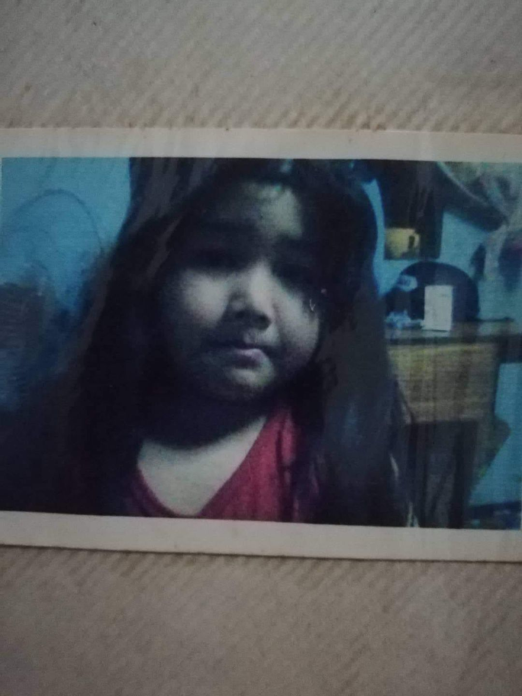

As a child, I have always been someone who was very timid and very curious at the same time.
When I was a kid i remember having this very long hair because my father wanted me to have a long hair and i really liked it
My curiousity as a toddler has always been the reason why I get a lot wounds and cuts on my body.